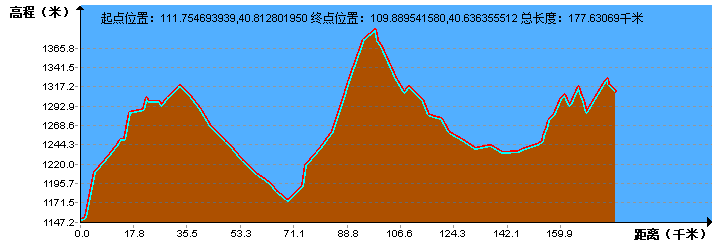
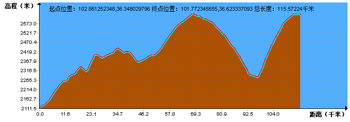
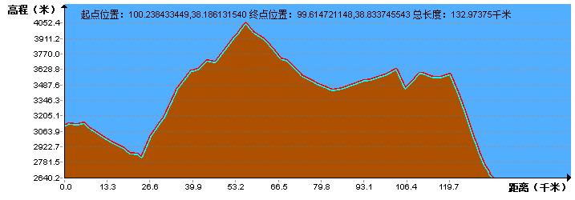

| | | | | |
| - | - | - | - | - |
|<b>别名</b>|蒙、内蒙、塞北||<b>著名景点</b>|成吉思汗陵，鄂尔多斯草原，呼伦贝尔草原等|
|<b>行政区类别</b>|自治区||<b>机 场</b>|呼和浩特白塔国际机场、包头机场、鄂尔多斯伊金霍洛国际机场等|
|<b>所属地区</b>|华北地区、东北地区、西北地区||<b>火车站</b>|呼和浩特站、包头站、鄂尔多斯站、赤峰站、通辽站等|
|<b>下辖地区</b>|9个地级市、3个盟||<b>车牌代码</b>|蒙A-蒙M|
|<b>电话区号</b>|（+86）0470～0482||<b>GDP</b>|16103.2亿元（2017年）|
|<b>邮政区码</b>|010000-026000||<b>人均GDP</b>|63786元（2017年）|
|<b>地理位置</b>|中国北部（97°E~126°E，37°N~53°N）||-|-|
|<b>面 积</b>|118.3万平方千米||-|-|
|<b>人 口</b>|2470.6万（2017年常住人口）||-|-|
|<b>气候条件</b>|温带大陆性气候、温带季风气候||-|-|
| <b>内蒙古生活文化</b> | <b>内蒙古特色文化</b> | <b>内蒙古曲艺文化</b> | <b>内蒙古建筑文化</b> | <b>内蒙古宗教文化</b> |
| - | - | - | - | - |
| <a href="javascript:;" onclick="live(this);">习俗/民俗</a> | <a href="javascript:;" onclick="feature(this);">内蒙古博克</a> | <a href="javascript:;" onclick="art(this);">好来宝</a> | <a href="javascript:;" onclick="building(this);">蒙古包</a> | <a href="javascript:;" onclick="religion(this);">内蒙古庙会</a> |
| <a href="javascript:;" onclick="live(this);">方言文化</a> | <a href="javascript:;" onclick="feature(this);">那达慕大会</a> | <a href="javascript:;" onclick="art(this);">乌力格尔</a> | - | - |
| <a href="javascript:;" onclick="live(this);">节日文化</a> | <a href="javascript:;" onclick="feature(this);">巴林左旗皮影戏</a> | <a href="javascript:;" onclick="art(this);">蒙古族呼麦</a> | - | - |
| <a href="javascript:;" onclick="live(this);">嫁娶文化</a> | <a href="javascript:;" onclick="feature(this);">二人台</a> | <a href="javascript:;" onclick="art(this);">马头琴</a> |-|-|
| <a href="javascript:;" onclick="live(this);">饮食文化</a> | <a href="javascript:;" onclick="feature(this);">蒙古马耐力赛</a> | -|-|-|
| <a href="javascript:;" onclick="live(this);">内蒙古禁忌</a> | <a href="javascript:;" onclick="feature(this);">顶碗舞</a> |-| -|-|
|-| <a href="javascript:;" onclick="feature(this);">安代舞</a> |-|-|-|
## <i class="fa fa-file-text-o"></i>&nbsp;目录（Table of Contents）
+ [I. 总路线图](#one)
+ [II. 景点](#two)
+ [III. 路线规划（所含地区：宁夏、甘肃、青海）](#three)
- [1、齐齐哈尔 - 扎兰屯市](#1)
- [2、扎兰屯市 - 博克图镇](#2)
- [3、博克图镇 - 免渡河镇](#3)
- [4、免渡河镇 - 呼伦贝尔](#4)
- [5、呼伦贝尔 - 扎赉诺尔区](#5)
- [6、扎赉诺尔区 - 满洲里](#6)
- [7、满洲里 - 新巴尔虎右旗（备用路线）](#7)
- [8、新巴尔虎右旗 - 新巴尔虎左旗（备用路线）](#8)
- [9、新巴尔虎左旗 - 阿尔山市（备用路线）](#9)
- [10、阿尔山市 - 树木沟乡（备用路线）](#10)
- [11、树木沟乡 - 霍林郭勒市（备用路线）](#11)
- [12、霍林郭勒市 - 西乌珠穆沁旗（备用路线）](#12)
- [13、西乌珠穆沁旗 - 锡林浩特市（备用路线）](#13)
- [14、锡林浩特市 - 苏尼特左旗（备用路线）](#14)
- [15、苏尼特左旗 - 二连浩特（备用路线）](#15)
- [16、二连浩特 - 苏尼特右旗](#16)
- [17、苏尼特右旗 - 察哈尔右翼后旗](#17)
- [18、察哈尔右翼后旗 - 呼和浩特](#18)
- [19、呼和浩特 - 包头市](#19)
- [20、包头市 - 巴彦淖尔市](#20)
- [21、巴彦淖尔市 - 乌海市](#21)
- [22、乌海市 - 银川](#22)
- [23、银川 - 中卫市](#23)
- [24、中卫市 - 刘川乡](#24)
- [25、刘川乡 - 兰州](#25)
- [26、兰州 - 民和回族土族自治县](#26)
- [27、民和回族土族自治县 - 西宁](#27)
- [28、西宁 - 江西沟乡](#28)
- [29、江西沟乡 - 石乃海乡](#29)
- [30、石乃海乡 - 哈尔盖乡](#30)
- [31、哈尔盖乡 - 默勒镇](#31)
- [32、默勒镇 - 祁连县](#32)
- [33、祁连县 - 肃南裕固族自治县](#33)
- [34、肃南裕固族自治县 - 嘉峪关市](#34)
- [35、嘉峪关市 - 玉门市](#35)
- [36、玉门市 - 瓜州县](#36)
- [37、瓜州县 - 敦煌莫高窟](#37)
- [38、敦煌莫高窟 - 柳园镇](#38)
- [39、柳园镇 - 红柳村](#39)
<h2 id="one"><i class="fa fa-circle-o-notch fa-spin"></i>&nbsp;总路线图</h2>
<h2 id="two"><i class="fa fa-star-o"></i>&nbsp;景点</h2>
<img data-src="../imgs/region-line/scenic-spot/neimenggu.gif" title="景点"/>
<h2 id="three"><i class="fa fa-spinner fa-pulse"></i>&nbsp;路线规划（所含地区：宁夏、甘肃、青海）</h2>
<h4 id="1">1、齐齐哈尔 - 扎兰屯市&nbsp;&nbsp;<i class="fa fa-bicycle fa-2x"></i></h4>
<h4 id="2">2、扎兰屯市 - 博克图镇&nbsp;&nbsp;<i class="fa fa-bicycle fa-2x"></i></h4>
<img data-src="../imgs/region-line/neimenggu/2t.png" title="2、扎兰屯市 - 博克图镇"/>
<h4 id="3">3、博克图镇 - 免渡河镇&nbsp;&nbsp;<i class="fa fa-bicycle fa-2x"></i></h4>
<img data-src="../imgs/region-line/neimenggu/3t.png" title="3、博克图镇 - 免渡河镇"/>
<h4 id="4">4、免渡河镇 - 呼伦贝尔&nbsp;&nbsp;<i class="fa fa-bicycle fa-2x"></i></h4>
<img data-src="../imgs/region-line/neimenggu/4.png" width="61%" height="40%" title="4、免渡河镇 - 呼伦贝尔"/>
<h4 id="5">5、呼伦贝尔 - 扎赉诺尔区&nbsp;&nbsp;<i class="fa fa-bicycle fa-2x"></i></h4>
<h4 id="6">6、扎赉诺尔区 - 满洲里&nbsp;&nbsp;<i class="fa fa-bicycle fa-2x"></i></h4>
<h4 id="7">7、满洲里 - 新巴尔虎右旗（备用路线）&nbsp;&nbsp;<i class="fa fa-bicycle fa-2x"></i></h4>
<h4 id="8">8、新巴尔虎右旗 - 新巴尔虎左旗（备用路线）&nbsp;&nbsp;<i class="fa fa-bicycle fa-2x"></i></h4>
<img data-src="../imgs/region-line/neimenggu/8.png" width="61%" height="40%" title="8、新巴尔虎右旗 - 新巴尔虎左旗（备用路线）"/>
<h4 id="9">9、新巴尔虎左旗 - 阿尔山市（备用路线）&nbsp;&nbsp;<i class="fa fa-bicycle fa-2x"></i></h4>
<h4 id="10">10、阿尔山市 - 树木沟乡（备用路线）&nbsp;&nbsp;<i class="fa fa-bicycle fa-2x"></i></h4>
<h4 id="11">11、树木沟乡 - 霍林郭勒市（备用路线）&nbsp;&nbsp;<i class="fa fa-bicycle fa-2x"></i></h4>
<h4 id="12">12、霍林郭勒市 - 西乌珠穆沁旗（备用路线）&nbsp;&nbsp;<i class="fa fa-bicycle fa-2x"></i></h4>
<h4 id="13">13、西乌珠穆沁旗 - 锡林浩特市（备用路线）&nbsp;&nbsp;<i class="fa fa-bicycle fa-2x"></i></h4>
<h4 id="14">14、锡林浩特市 - 苏尼特左旗（备用路线）&nbsp;&nbsp;<i class="fa fa-bicycle fa-2x"></i></h4>
<img data-src="../imgs/region-line/neimenggu/14t.png" title="14、锡林浩特市 - 苏尼特左旗（备用路线）"/>
<h4 id="15">15、苏尼特左旗 - 二连浩特（备用路线）&nbsp;&nbsp;<i class="fa fa-bicycle fa-2x"></i></h4>
<h4 id="16">16、二连浩特 - 苏尼特右旗&nbsp;&nbsp;<i class="fa fa-bicycle fa-2x"></i></h4>
<h4 id="17">17、苏尼特右旗 - 察哈尔右翼后旗&nbsp;&nbsp;<i class="fa fa-bicycle fa-2x"></i></h4>
<h4 id="18">18、察哈尔右翼后旗 - 呼和浩特&nbsp;&nbsp;<i class="fa fa-bicycle fa-2x"></i></h4>
<h4 id="21">19、呼和浩特 - 包头市&nbsp;&nbsp;<i class="fa fa-bicycle fa-2x"></i></h4>

<h4 id="22">20、包头市 - 巴彦淖尔市&nbsp;&nbsp;<i class="fa fa-bicycle fa-2x"></i></h4>
<h4 id="23">21、巴彦淖尔市 - 乌海市&nbsp;&nbsp;<i class="fa fa-bicycle fa-2x"></i></h4>
<h4 id="24">22、乌海市 - 银川&nbsp;&nbsp;<i class="fa fa-bicycle fa-2x"></i></h4>
<h4 id="25">23、银川 - 中卫市&nbsp;&nbsp;<i class="fa fa-bicycle fa-2x"></i></h4>
<h4 id="26">24、中卫市 - 刘川乡&nbsp;&nbsp;<i class="fa fa-bicycle fa-2x"></i></h4>
<img data-src="../imgs/region-line/neimenggu/24.png" width="61%" height="40%" title="24、中卫市 - 刘川乡"/>
<h4 id="27">25、刘川乡 - 兰州&nbsp;&nbsp;<i class="fa fa-bicycle fa-2x"></i></h4>
<h4 id="28">26、兰州 - 民和回族土族自治县&nbsp;&nbsp;<i class="fa fa-bicycle fa-2x"></i></h4>
<h4 id="29">27、民和回族土族自治县 - 西宁&nbsp;&nbsp;<i class="fa fa-bicycle fa-2x"></i></h4>

<h4 id="30">28、西宁 - 江西沟乡&nbsp;&nbsp;<i class="fa fa-bicycle fa-2x"></i></h4>
<h4 id="31">29、江西沟乡 - 石乃海乡&nbsp;&nbsp;<i class="fa fa-bicycle fa-2x"></i></h4>
<h4 id="32">30、石乃海乡 - 哈尔盖乡&nbsp;&nbsp;<i class="fa fa-bicycle fa-2x"></i></h4>
<h4 id="33">31、哈尔盖乡 - 默勒镇&nbsp;&nbsp;<i class="fa fa-bicycle fa-2x"></i></h4>
<h4 id="34">32、默勒镇 - 祁连县&nbsp;&nbsp;<i class="fa fa-bicycle fa-2x"></i></h4>
<img data-src="../imgs/region-line/neimenggu/32t.png" title="32、默勒镇 - 祁连县"/>
<h4 id="35">33、祁连县 - 肃南裕固族自治县&nbsp;&nbsp;<i class="fa fa-bicycle fa-2x"></i></h4>

<h4 id="36">34、肃南裕固族自治县 - 嘉峪关市&nbsp;&nbsp;<i class="fa fa-bicycle fa-2x"></i></h4>
<h4 id="37">35、嘉峪关市 - 玉门市&nbsp;&nbsp;<i class="fa fa-bicycle fa-2x"></i></h4>
<h4 id="38">36、玉门市 - 瓜州县&nbsp;&nbsp;<i class="fa fa-bicycle fa-2x"></i></h4>
<h4 id="39">37、瓜州县 - 敦煌莫高窟&nbsp;&nbsp;<i class="fa fa-bicycle fa-2x"></i></h4>
<h4 id="40">38、敦煌莫高窟 - 柳园镇&nbsp;&nbsp;<i class="fa fa-bicycle fa-2x"></i></h4>
<h4 id="41">39、柳园镇 - 红柳村&nbsp;&nbsp;<i class="fa fa-bicycle fa-2x"></i></h4>